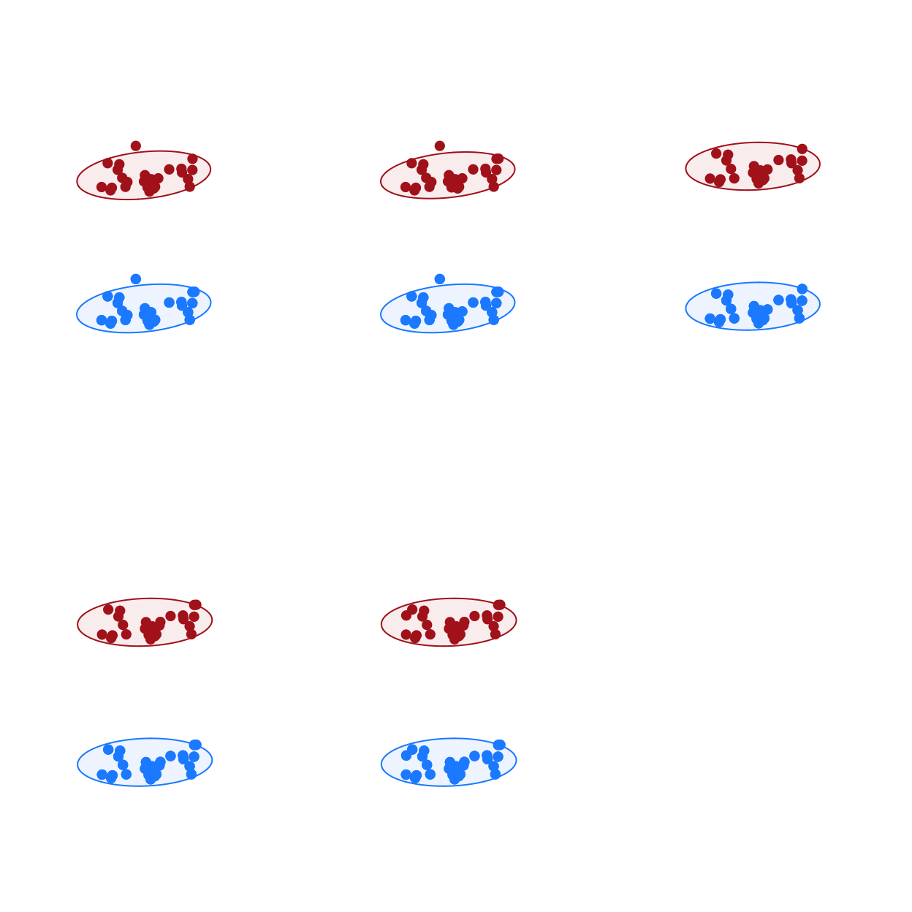

CaseStudyTwo.RmdThis case study is based on a long-term CMR dataset from a high-density population of European badgers in the United Kingdom (Delahay et al., 2013; McDonald, Robertson, & Silk, 2018). Badgers in medium to high-density populations live in territorial social groups centred on a main sett (refuge/burrow system). The study population is trap-sampled four times per year (in May-June, July-August, September-October and December-January) using baited cage traps deployed at all know active sett locations (see McDonald et al., 2018 for more detail). Badgers give birth in late-winter (the date of birth of all cubs is assumed to be 1st February) and no trapping takes place while females have dependent cubs.
Here we demonstrate the multiplex movement network construction features of CMRnet using a subset badger capture dataset. We construct multiplex movement networks with layers that depict the movements of females and males separately. In this example we are not testing a particular hypothesis so much as demonstrating the use of the package in a visual exploration of movement network structure.
First we set up our environment.
The data we use here is not documented in the package, but can be accessed to recreate this analyses by using CMRnet:::capturesData and CMRnet:::individualData.
# look at dimensions of data str(captures) #> 'data.frame': 14461 obs. of 6 variables: #> $ tattoo : chr "Y001" "Y002" "G020" "B031" ... #> $ date : chr "10/06/1981" "10/06/1981" "11/06/1981" "12/06/1981" ... #> $ socg : chr "WEST" "SEPTIC TANK" "SEPTIC TANK" "SEPTIC TANK" ... #> $ sett : chr "WEST" "SEPTIC TANK" "SEPTIC TANK" "SEPTIC TANK" ... #> $ CaptureYear: int 1981 1981 1981 1981 1981 1981 1981 1981 1981 1981 ... #> $ where : chr "SETT" "SETT" "SETT" "SETT" ... str(indivdat) #> 'data.frame': 2975 obs. of 4 variables: #> $ tattoo : chr "001A" "001B" "001E" "001F" ... #> $ age_fc : chr "CUB" "ADULT" "CUB" "ADULT" ... #> $ year_fc: int 2014 2006 2013 2010 2003 2012 2011 2009 2008 2004 ... #> $ sex : chr "FEMALE" "MALE" "FEMALE" "MALE" ...
We then do some data manipulation to fill in data on the age and sex of badgers in the captures data set. We also wrangle the date formats and create a dataframe in the format needed for CMRnet.
captures$sex <- rep(NA,nrow(captures)) captures$age <- rep("ADULT",nrow(captures)) # Fill in data on the age and sex of badgers in the captures dataset for(i in 1:nrow(captures)){ if(captures$tattoo[i]%in%indivdat$tattoo){ captures$sex[i] <- as.character(indivdat$sex[indivdat$tattoo == as.character(captures$tattoo[i])]) if(substr(captures$date[i],7,10) == indivdat$year_fc[indivdat$tattoo == as.character(captures$tattoo[i])] & (is.na(indivdat$age_fc[indivdat$tattoo == as.character(captures$tattoo[i])]) == FALSE)&indivdat$age_fc[indivdat$tattoo == as.character(captures$tattoo[i])] == "CUB"){ captures$age[i] <- "CUB" } if(substr(captures$date[i],7,10) == indivdat$year_fc[indivdat$tattoo == as.character(captures$tattoo[i])]&(is.na(indivdat$age_fc[indivdat$tattoo == as.character(captures$tattoo[i])]) == TRUE)){ captures$age[i] <- NA } } } # Convert sex as a factor captures$sex <- as.factor(captures$sex) # Add a date column in correct format captures$date2 <- as.Date(paste0(substr(captures$date,7,10),"-",substr(captures$date,4,5),"-",substr(captures$date,1,2))) # Add year, month and day columns captures$year <- lubridate::year(captures$date2) captures$month <- lubridate::month(captures$date2) captures$day <- lubridate::day(captures$date2) # Create a year of study column captures$year_of_study <- rep(NA,nrow(captures)) for(i in 1:nrow(captures)){ if(captures$month[i] > 1){ captures$year_of_study[i] <- as.numeric(captures$year[i])-1985 } if(captures$month[i] == 1){ captures$year_of_study[i] <- as.numeric(captures$year[i])-1986 } } # subset data to only include 30 years - Feb 1986 to Jan 2016 captures2 <- captures[captures$year_of_study>0&captures$year_of_study<31,] # Create a dataframe in the correct format for CMRnet captures3 <- data.frame(captures2$tattoo,captures2$socg,rep(NA,nrow(captures2)),rep(NA,nrow(captures2)),captures2$date2) names(captures3) <- c("id","loc","x","y","date") # Assign fake coordinates to locations using there factor ids as we are not going to make use of true geographic coordinates captures3$x <- as.numeric(as.factor(captures3$loc)) captures3$y <- as.numeric(as.factor(captures3$loc)) #Add sex as a layer column captures3$layer <- as.numeric(captures2$sex)
First we define the parameters we are going to use to generate the networks. For the movement networks we are going to use two year (24 month) network windows and allow an interaction window of 365 days (~one year). By setting nextonly=TRUE we ensure that only direct (recorded) movements between groups are recorded as edges in the network and by setting index=FALSE we set edge weights in the network layers to be counts of the number of movements made.
# Define parameters for first time period mindate<-"2006-02-01" maxdate<-"2016-02-01" intwindow<-365 netwindow<-24 overlap<-0 spacewindow<-0 # Generate Multiplex movement networks mmd <- MultiMoveNetCreate( data = captures3, intwindow = intwindow, mindate = mindate, maxdate = maxdate, netwindow = netwindow, overlap = overlap, nextonly = TRUE, index=FALSE ) #> [1] "End of final network window aligns with end of study"
The functionality of CMRnet then allows us to convert the output to a list of igraph network objects for use in further analyses or plotting
# create igraph objects nets <- cmr_igraph(mmd,type="multiplex")
CMRnet includes basic plotting of multiplex movement networks. Plotting multiplex networks is challenging and more sophisticated approaches might require the user to adapt the code presented here or use alternative software such as MuxViz.
# exploratory plots of multiplex movement networks cmrMultiplexPlot(nets=nets, fixed_locs=TRUE, dynamic=FALSE, rows=2, layer_colours=c("dodger blue","firebrick"))

We can also use the igraph objects saved to calculate various network measures. We provide a simple example here by calculating the betweenness centrality separately for the different layers, both in the overall network and for each network window independently.
# calculate betweenness centrality for each layer in the overall network betweenness_ovr<-lapply(nets[[2]],igraph::betweenness) # calculate betweenness centrality separately for each network layer in each network window (you could do this in a loop or using apply if you preferred) betweenness1<-lapply(nets[[1]][[1]],igraph::betweenness) betweenness2<-lapply(nets[[1]][[2]],igraph::betweenness) betweenness3<-lapply(nets[[1]][[3]],igraph::betweenness) betweenness4<-lapply(nets[[1]][[4]],igraph::betweenness) betweenness5<-lapply(nets[[1]][[5]],igraph::betweenness)
These calculations can then be used to go on and test hypotheses or conduct exploratory analyses on the networks generated. For example, here we look at the association between betweenness centrality in the female layer and male layer of the overall network. We use a 1:1 line to show that badger setts or groups tend to have higher betweenness in the male rather than female layer of the movement network. There is perhaps some indication as well that setts or groups that have high betweenness in one layer tend also to have higher betweenness in the other layer, although clearly this would require an appropriate analysis to test formally.
# test relationship in betweenness centrality between layers in the overall network par(mar=c(5,5,3,3)) plot(betweenness_ovr[[1]],betweenness_ovr[[2]], xlab="Betweenness in female movement layer", ylab="Betweenness in\nmale movement layer", pch=16, cex=1.5, col="dark blue", cex.axis=1.3, cex.lab=1.1, xlim=c(0,350), ylim=c(0,350), las=1) lines(x=seq(-200,500,1),y=seq(-200,500,1),lty=2)